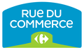

Hello!
Architecte web passionné de technologies, j'accompagne votre transformation digitale et les projets d'innovation.
Bruno a fait un excellent travail pour Rue du Commerce, en arrivant à convaincre et fédérer les équipes IT, grâce à son expertise technique, sa capacité de persuasion, et à une abnégation à tout épreuve !
Il a été l'un des architectes de la nouvelle plateforme technique web Rue du Commerce, en promouvant notamment une architecture performante, en microservices et APIsée, ainsi que l'expérimentation d'une architecture event-driven utilisant RabbitMQ
Il a été l'un des architectes de la nouvelle plateforme technique web Rue du Commerce, en promouvant notamment une architecture performante, en microservices et APIsée, ainsi que l'expérimentation d'une architecture event-driven utilisant RabbitMQ
Eric Steer
Rue Du Commerce / Suricats Consulting
We were referred to Bruno in the early stages of Doctena's international expansion when we needed assistance with event-driven message bus architecture and general platform interoperability.
Bruno is a very knowledgeable IT expert and a great guy to work with on the social levels.
He has high ethical standards when it comes to delivering quality work and I would hire him again whenever the need arises.
Strongly recommended!
Bruno is a very knowledgeable IT expert and a great guy to work with on the social levels.
He has high ethical standards when it comes to delivering quality work and I would hire him again whenever the need arises.
Strongly recommended!
Alain Fontaine
Doctena
Bruno is a state-of-the-art IS architect, with a deep and precise vision of his job.
He is a whole person, constantly challenging.
Very interesting and a pleasure to work with him.
He is a whole person, constantly challenging.
Very interesting and a pleasure to work with him.
Arnaud Drillon
France Télévisions
J'ai collaboré avec Bruno pendant ma mission à la DSI du Credit du Nord.
A cette occasion, j'ai apprécié, en plus de ses competences, sa capacité à dialoguer avec les équipes et à tenir compte des besoins de chacun (fonctionnels et techniques), mais aussi le fait qu'il essaie de proposer en permanence une solution qui soit perenne et evolutive pour les besoins futurs.
A cette occasion, j'ai apprécié, en plus de ses competences, sa capacité à dialoguer avec les équipes et à tenir compte des besoins de chacun (fonctionnels et techniques), mais aussi le fait qu'il essaie de proposer en permanence une solution qui soit perenne et evolutive pour les besoins futurs.
David Dewailly
Crédit du Nord
